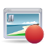
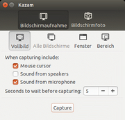
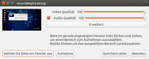
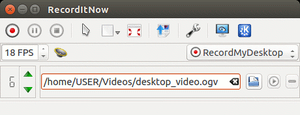

Screencasts
Zum Verständnis dieses Artikels sind folgende Seiten hilfreich:
 Screencasts sind digitale Filme, die die Anwendung von Programmen auf dem Desktop eines Computers zeigen. Häufig werden auch zusätzliche Audio-Aufnahmen erstellt, so dass man Erklärungen zum Vorgehen auf dem Desktop abgeben kann. So lassen sich z.B. sehr gut Anleitungen realisieren oder ein beeindruckender 3D-Desktop aufnehmen.
Übersicht¶
Die Auswahl an Programmen, um einen Screencast zu erstellen, ist recht groß. Um die Auswahl etwas einfacher zu gestalten, folgt eine alphabetische Übersicht der verfügbaren Programme.
| Übersicht verschiedener Screencast-Programme | ||||||
| Programm | Formate | Vollbild | Ausschnitt | Fenster | Audio | Anmerkungen |
| Cankiri | OGV | Ja | Ja * | Nein | Ja | * Der Ausschnitt lässt sich nicht verschieben |
| FFmpeg | MPEG4 | Ja | Ja | Nein | Ja | Kommandozeilenanwendung |
| GNOME Shell | WebM | Ja | Nein | Nein | Nein | interne Funktion der GNOME Shell |
| Istanbul | OGV | Ja | Ja | Nein | Nein | funktioniert nicht mit Unity |
| Kazam | WebM/MKV | Ja | Ja | Ja | Ja | kann PulseAudio, funktioniert auch mit Unity und der GNOME Shell |
| RecordItNow | diverse | Ja | Ja | Ja | Ja | Werkzeug für KDE |
| recordMyDesktop | OGV | Ja | Ja | Ja | Ja | Resultat falsch kodiert, Soundaufnahme mit JACK funktioniert nicht |
| SimpleScreenRecorder | diverse | Ja | Ja | Ja | Ja | Qt-basiert, sehr umfangreich, wird aktiv entwickelt |
| VLC Media Player | FLV und andere | Ja | Nein | Nein | Nein | funktioniert nicht mit Unity |
| vokoscreen | MPEG4 und libx264 (mkv und avi) | Ja | Ja | Ja | Ja | funktioniert mit PulseAudio und ALSA |
Programme¶

Kazam¶
Kazam ist eine moderne Screencast-Software, die auch unter Unity und der GNOME Shell funktioniert. Es nutzt für die Kodierung das Multimedia-Framework GStreamer. Der Ton wird beim Erstellen eines Screencasts über PulseAudio aufgenommen. Im Vergleich zu anderen Programmen, die nur offene Kodierungen wie bspw. den Video-Codec Theora enthalten, werden die bei Kazam verwendeten Kodierungen auch auf anderen Plattformen sowie im kommerziellen Umfeld unterstützt.
GNOME Shell¶
Ab GNOME 3 ist eine Screencast-Lösung integriert. Mit der Tastenkombination
Strg +
Alt +
⇧ +
R startet bzw. beendet man eine Aufnahme. Die laufende Aufzeichnung wird durch einen roten Kreis rechts unten auf dem Desktop angezeigt. Die Framerate ist standardmäßig auf 15 Bilder festgelegt. Die Aufnahme im VP8/WebM-Format wird im Homeverzeichnis unter ~/Videos/ gespeichert. Sowohl die Framerate als auch der Codec können via dconf-editor über den Schlüssel org.gnome.shell.recorder angepasst werden.
Um die Begrenzung auf 30 Sekunden aufzuheben, ändert man den Wert für max-screencast-length im Schlüssel org.gnome.settings-daemon.plugins.media-keys.
SimpleScreenRecorder¶
Eine Neuentwicklung – im Vergleich mit den anderen hier vorgestellten Programmen – ist SimpleScreenRecorder. Ein integrierter Assistent führt in fünf einfachen Schritten zum eigenen Video. Es bietet entgegen dem, was der Name vermuten lässt, sehr viele Konfigurationsmöglichkeiten, die man nutzen kann, aber nicht muss.
Green Recorder¶
Auch der Green Recorder  ist ein nützliches Werkzeug. Unterstützt wird neben dem XServer zusätzlich Wayland. Die Installation erfolgt ab Ubuntu 16.04 über ein "Personal Packages Archiv" (PPA) [1].
ist ein nützliches Werkzeug. Unterstützt wird neben dem XServer zusätzlich Wayland. Die Installation erfolgt ab Ubuntu 16.04 über ein "Personal Packages Archiv" (PPA) [1].
Adresszeile zum Hinzufügen des PPAs:
ppa:mhsabbagh/greenproject
Hinweis!
Zusätzliche Fremdquellen können das System gefährden.
Ein PPA unterstützt nicht zwangsläufig alle Ubuntu-Versionen. Weitere Informationen sind der  PPA-Beschreibung des Eigentümers/Teams mhsabbagh zu entnehmen.
PPA-Beschreibung des Eigentümers/Teams mhsabbagh zu entnehmen.
Damit Pakete aus dem PPA genutzt werden können, müssen die Paketquellen neu eingelesen werden.
Nach dem Aktualisieren der Paketquellen kann folgendes Paket installiert werden [2]:
green-recorder (ppa)
 mit apturl
mit apturl
Paketliste zum Kopieren:
sudo apt-get install green-recorder
sudo aptitude install green-recorder
Istanbul¶
Istanbul ist eine Software, die den Desktop von Desktopumgebungen, die sich an den "Free-Desktop"-Standard halten, im OGV-Format aufnehmen kann. Dazu gehören GNOME, KDE, Xfce und andere. Das Programm ist bis einschließlich Ubuntu 15.10 in den offiziellen Paketquellen enthalten und kann über das folgende Paket installiert werden [2]:
istanbul (universe)
mit apturl
Paketliste zum Kopieren:
sudo apt-get install istanbul
sudo aptitude install istanbul
Anschließend kann man es bei Ubuntu-Varianten mit einem Anwendungsmenü über "Multimedia -> Istanbul Desktop Session Recorder" starten. Nach dem Start erscheint Istanbul in der Statusbereich (Systray) des jeweiligen Desktops. Mit einem Klick auf das Symbol startet die Aufnahme, mit einem weiteren Klick endet die Aufnahme, und man wird gefragt, wohin man die Aufnahme speichern möchte. Über einen Rechtsklick kann man angeben, ob nur ein Ausschnitt gefilmt werden soll, und man kann die Qualität der Aufnahme definieren.
Cankiri¶
Cankiri ist ein weiteres Programm zur Aufnahme des Desktops. Es basiert auf Istanbul und soll von der Handhabung her einfacher sein. Cankiri ist nicht in den Paketquellen enthalten. Als Python-Programm braucht es jedoch nicht kompiliert zu werden. Zur Ausführung werden folgende Pakete benötigt [2]:
python
python-gtk2
python-gst0.10
python-eggtrayicon
mit apturl
Paketliste zum Kopieren:
sudo apt-get install python python-gtk2 python-gst0.10 python-eggtrayicon
sudo aptitude install python python-gtk2 python-gst0.10 python-eggtrayicon
Allerdings sollten diese Pakete automatisch bei der Installation von Ubuntu mit installiert werden. Im Normalfall lädt man sich daher von der Homepage das Programmarchiv auf den Rechner, entpackt es [3], macht die Programmdatei cankiri.py ausführbar und startet das Programm.
Ähnlich wie bei Istanbul erscheint ein Symbol im Systray. Klickt man darauf, so kann man den Speicherort der Aufnahme festlegen und verschiedene Parameter definieren. Klickt man auf "OK", so wird die Aufnahme gestartet. Klickt man ein weiteres Mal auf das Symbol, so wird die Aufnahme beendet.

recordMyDesktop¶
recordMyDesktop möchte die Aufnahme des Desktops möglichst einfach machen. Das Programm besteht aus zwei Teilen: einem Programm ohne Oberfläche für die Aufnahme, das direkt aus einem Terminalfenster heraus gestartet werden kann, und einer grafischen Oberfläche, basierend auf Python und GTK. recordMyDesktop kann sowohl das Bild als auch den Ton aus einer beliebigen Quelle heraus aufnehmen.
RecordItNow¶
Hinweis:
Recorditnow wird nicht mehr aktiv weiterentwickelt! Somit müssen Anwender damit rechnen, das vermehrt Probleme bei der Verwendung des Programms auftreten können, vor allem mit neueren Ubuntu-Versionen.

RecordItNow bietet unter KDE eine graphische Oberfläche, die zum Aufzeichnen von Screencasts verschiedene Plugins wie recordMyDesktop, FFMpeg oder einfach Bildschirmfotos verwendet. Für die Aufnahme lassen sich verschiedene Details einstellen und während dieser Tastatur und Mauseingaben aufzeichnen. Ein weiteres Encodieren der Aufnahme mit FFMpeg und Mencoder in diverse Formate ist ebenso möglich wie ein direkter Upload zu den Videoplattformen Youtube  und Blip.tv .
und Blip.tv .
recorditnow (universe - Frontend für KDE)
mit apturl
Paketliste zum Kopieren:
sudo apt-get install recorditnow
sudo aptitude install recorditnow
Probleme¶
Wenn kein Video aufgezeichnet wird, kann es helfen, in den Einstellungen des RecordMyDesktop-Plugins unter Encoding die Bitrate von 45000 (Minimalwert) auf 2000000 (Maximalwert) zu stellen.
Ab Ubuntu 12.04 funktioniert der "RecordItNow-Modus" nicht mehr. Zwar kann auf das "ffmpeg-plugin" ausgewichen werden, allerdings lässt sich in dieser Konstellation die Aufnahme nicht mehr stoppen. Um dieses Problem bei Ubuntu 12.10 oder neuer zu lösen, kann für Ubuntu 13.10 eine korrigierte Version über ein PPA geladen werden. Für Soundaufnahmen mit PulseAudio muss jedoch noch das Plugin in den "Einstellungen" angepasst werden.
Adresszeile zum Hinzufügen des PPAs:
ppa:ap10336/test
Hinweis!
Zusätzliche Fremdquellen können das System gefährden.
Ein PPA unterstützt nicht zwangsläufig alle Ubuntu-Versionen. Weitere Informationen sind der PPA-Beschreibung des Eigentümers/Teams ap10336 zu entnehmen.
Damit Pakete aus dem PPA genutzt werden können, müssen die Paketquellen neu eingelesen werden.
Nach dem Aktualisieren der Paketquellen erfolgt die Installation wie oben angegeben.
VLC¶
Auch der VLC Media Player ist in der Lage, Screencasts zu erstellen. Folgender Programmaufruf startet den VLC-Player mit einer Desktop-Aufnahme (Ausgabe als screencast.flv mit 25 FPS). Zum Beenden der Aufnahme einfach "Stopp" im VLC-Player-Fenster anklicken.
Der Start erfolgt im Terminal mit dem Befehl [4]:
vlc screen:// --screen-fps 25 --nooverlay --sout "#transcode{vcodec=h264,vb=2048,scale=0.5,acodec=mp3,ab=128,channels=2}:duplicate{dst=std{access=file,mux=mp4,dst=screencast.flv}}" Durch Verwendung der Kommandozeilenversion cvlc kann man verhindern, dass sich ein eigenes Fenster öffnet:
cvlc screen:// --screen-fps 25 --nooverlay --sout "#transcode{vcodec=h264,vb=2048,scale=0.5,acodec=mp3,ab=128,channels=2}:duplicate{dst=std{access=file,mux=mp4,dst=screencast.flv}}" Die Aufnahme wird mit der Tastenkombination Strg + C beendet.
vokoscreen¶
Auch vokoscreen ist in der Lage, Screencasts zu erstellen. Die Bedienung ist simpel und das Programm hat nur wenige Paketabhängigkeiten. Es ist ab Ubuntu 14.04 in den offiziellen Paketquellen enthalten:
vokoscreen (universe)
mit apturl
Paketliste zum Kopieren:
sudo apt-get install vokoscreen
sudo aptitude install vokoscreen
Terminal¶
 Auch über ein Terminalfenster kann eine Aufnahme erfolgen.
Auch über ein Terminalfenster kann eine Aufnahme erfolgen.
Libav¶
Libav ist eine Abspaltung von FFmpeg (siehe nächster Abschnitt) und ab Ubuntu 12.04 vorinstalliert. Folgender Befehl erstellt ein Flash Video screencast.flv mit einer Auflösung von 1920x1080 sowie 25 Bildern in der Sekunde via avconv:
avconv -f x11grab -r 25 -s 1920x1080 -i :0.0 -vcodec libx264 screencast.flv
Die Aufnahme wird mit der Tastenkombination Strg + C beendet.
AVConv und FFMpeg unterstützen auch den für Bildschirmmitschnitte besonders geeigneten Video-Codec "Flash Screen Video". Die meisten Video-Codecs (Ogg Theora, H264, MPEG-2) sind für Aufnahmen natürlicher Szenen gedacht. Diese Codecs trennen im ersten Schritt Farb- von Helligkeitsinformationen (YUV-Farbraum) und reduzieren die Auflösung der Farbinformation. Sie gehen von glatten Übergängen im Bild und eigentlich keinen scharfen Kanten aus. Wenn man einen solchen Codec für Bildschirmmitschnitte verwendet, bekommt das Bild auch bei höchster Videobitrate Farbschlieren. Im Gegensatz dazu arbeitet "Flash Screen Video" im RGB-Farbraum und erlaubt eine verlustfreie Darstellung von Farben und Kanten.
avconv -f x11grab -show_region 1 -r 25 -s 640x480 -i :0.0 -vcodec flashsv screencast.flv
Dieser Befehl benutzt übrigens zusätzlich die Option -show_region 1, welche einen Rahmen um den aufgezeichneten Ausschnitt zeichnet.
Unglücklicherweise sieht man bei der Anzeige eines FlashSV-Videos in der Regel doch wieder Farbschlieren. Das liegt aber an den Abspielprogrammen wie VLC, MPlayer oder avplay/ffplay. Tatsächlich enthält das Video die originalen Bilder, was man überprüfen kann, wenn man das Video in seine Einzelbilder zerlegt:
avconv -i screencast.flv screencast%05d.png
FFmpeg¶
FFmpeg ist ein Kommandozeilenprogramm zur Erstellung und Umwandlung von Videos. Folgende Befehle erstellen einen verlustfreien Screencast mit dem HuffYUV-Codec bzw. in H.264 (MPEG-4 AVC) und einer Auflösung von 1024x768 sowie 25 Bildern in der Sekunde. Der Screencast wird in der Datei screencast.mkv bzw. screencast.mp4 in dem Verzeichnis gespeichert, aus dem man den Befehl heraus ausgeführt hat.
ffmpeg -f x11grab -r 25 -s 1024x768 -i :0.0 -c:v huffyuv screencast.mkv
ffmpeg -f x11grab -r 25 -s 1024x768 -i :0.0 -c:v libx264 screencast.mp4
Die Aufnahme wird mit der Tastenkombination Strg + C beendet. Besser ist allerdings, die Taste Q zum Beenden zu nutzen, die zu einem geordneten Programmstopp führt.
Links¶
Markus Oppitz OpenOffice Impress Screencast
 - Screencast mit eingezoomten Bildschirmbereichen, 2010
- Screencast mit eingezoomten Bildschirmbereichen, 2010Multimedia
 Übersichtsartikel
Übersichtsartikel
- Erstellt mit Inyoka
-
 2004 – 2017 ubuntuusers.de • Einige Rechte vorbehalten
2004 – 2017 ubuntuusers.de • Einige Rechte vorbehalten
Lizenz • Kontakt • Datenschutz • Impressum • Serverstatus -
Serverhousing gespendet von